Foco falla
Estático: cierra f/1.8 → f/2.2–2.8. Acción: centro + AI Servo + pre-seguimiento. No bajes el shutter que define el efecto.
Investiga 87 lugares y escenas con aprendizaje de perspectiva, ranking transparente, rutas peatonales por distrito, protocolo de campo offline y prevuelo de entrega.
Si nunca has usado este planner, sigue estos 5 pasos.
6 opciones: El Olivar, Malecón, San Isidro nocturno, Centro Histórico, Home/Building Lab y Abtao/Distrito Financiero.
Toggle superior: 👤 Humano (con 10 poses) o 🐶 Perro (con 10 poses caninas).
Toggle superior: ☀️ Día, 🌅 Tarde o 🌙 Noche. Los ajustes cambian por hora.
Cada toma muestra: posición de cámara, FoV, DoF, distancia, ángulo y pose.
con todas las técnicas, reglas y ajustes. Llévala al campo.
Flujo recomendado para tu primera sesión:
Empieza con Plan A (Parque El Olivar) en modo 👤 Humano + ☀️ Día. Es la combinación más accesible: locación cercana, luz predecible, y 10 tomas que cubren todas las técnicas. Si tienes tu perro, cambia el toggle a 🐶 Perro y prueba las mismas tomas con poses caninas.
La apertura máxima del lente es una capacidad; la apertura recomendada cambia según la toma. La Field Card y todos los planes usan esta misma fuente de verdad.
FoV H ≈54.2° · V ≈37.7° · IS.
FoV H ≈39.4° · V ≈26.9°.
FoV H ≈23.8° · V ≈16.0°.
FoV H ≈54.2° @35 → 25.2° @80.
La focal, apertura, distancia de enfoque y separación del fondo influyen en la profundidad de campo. Este laboratorio separa medidas geométricas calculadas de una previsualización pedagógica del desenfoque.
Modelo de lente delgada; no simula bokeh, aberraciones, luz ni exposición.
Cada plan cubre las 10 fotos solicitadas. Se recuperaron Home/Building Lab y Abtao sin perder los cuatro planes más recientes. Tres ventanas horarias (día / tarde / noche) y dos sujetos (humano / perro) se pueden activar con los toggles superiores.
De mucha profundidad de campo a zooming — cada técnica explicada con su fundamento óptico y los ajustes recomendados.
Compara cómo cambia la huella temporal al variar velocidad, movimiento y seguimiento. Es un estimador pedagógico de tendencia, no un exposímetro ni una simulación óptica pixel-perfect.
Cada toma aplica una regla específica. Aquí la guía visual ilustrada de las 8 que vas a practicar.
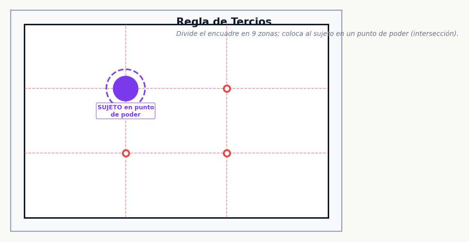
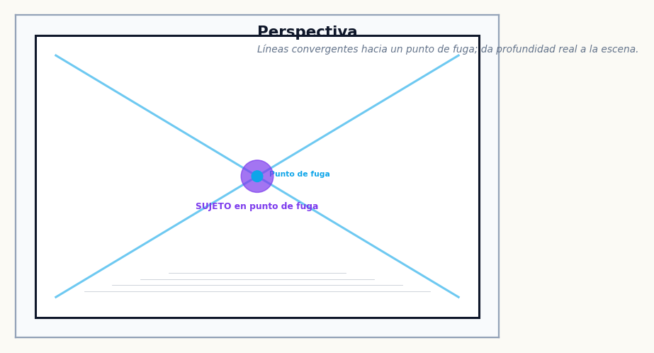
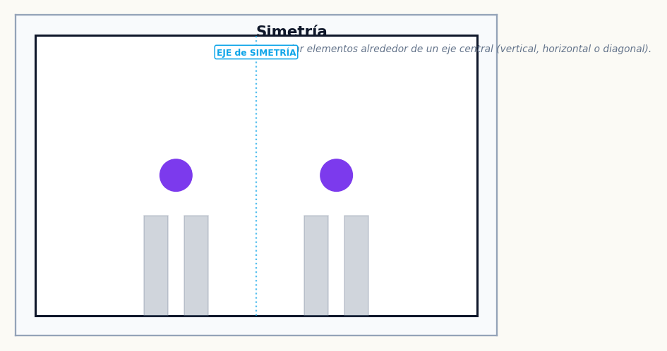
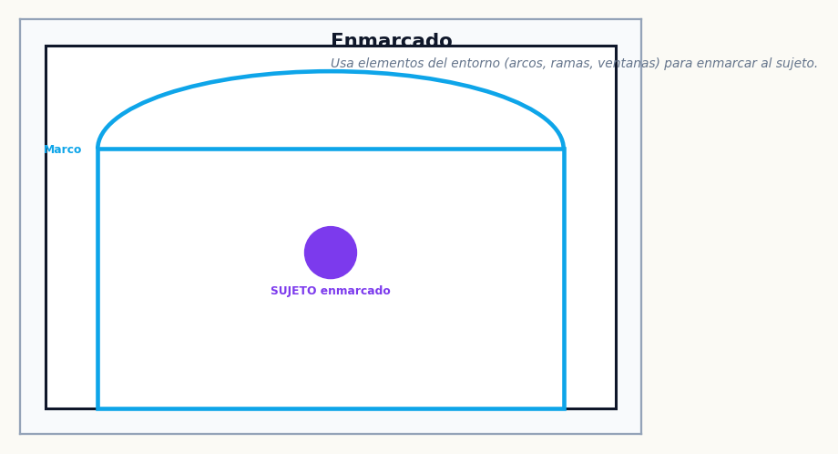
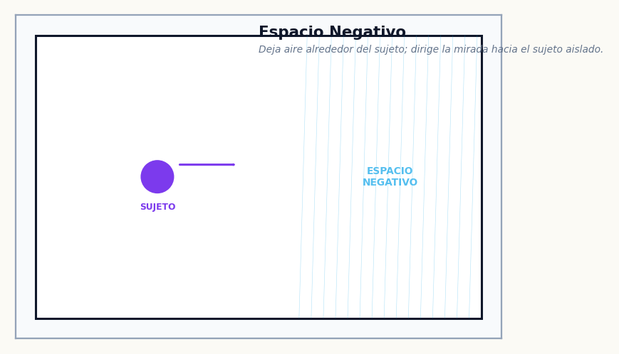
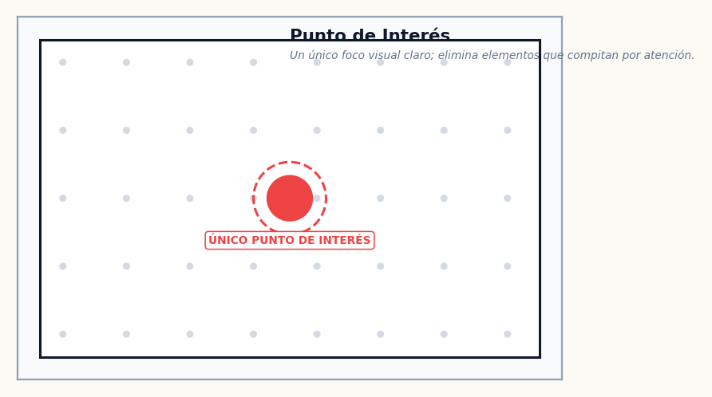
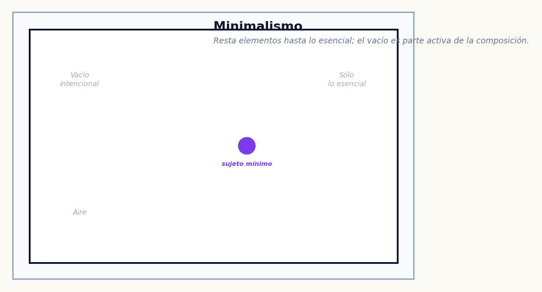
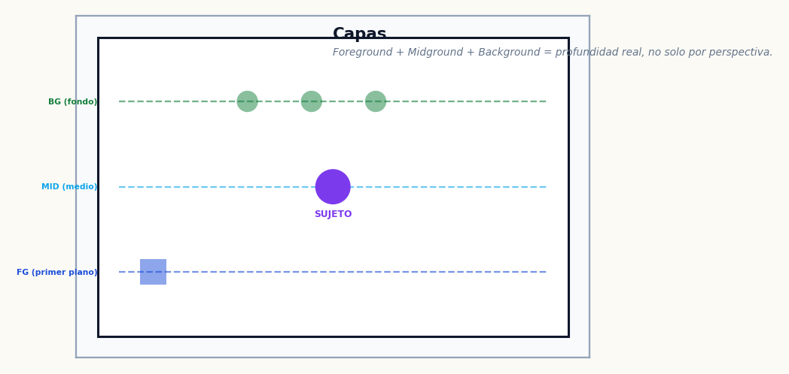
Toca o arrastra dentro del frame 3:2 y enciende overlays. El objetivo no es “obedecer reglas”, sino ver cómo cambian balance, tensión, dirección y espacio negativo.
Prueba primero un tercio; luego centra el sujeto y enciende simetría. Si la imagen mejora al centrar, la simetría está sirviendo mejor que la regla de tercios.
Central, picado, contrapicado, nadir, cenital y plano holandés — efectos narrativos de cada uno.
La misma cámara, la misma distancia al sujeto — solo cambia el lente. Mira cómo cambia el FoV, el encuadre y el desenfoque.
A 2.5m el 35mm da un retrato ambiental con contexto; el 50mm un half-body natural; el 85mm un head-and-shoulders íntimo.
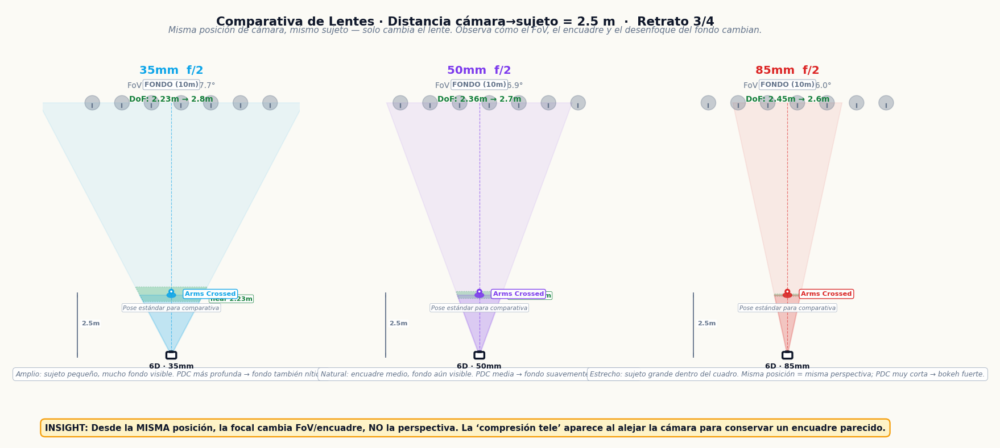
A 4m el 35mm permite full-body con fondo; el 50mm aísla más al sujeto; el 85mm da un retrato comprimido con fondo muy desenfocado.
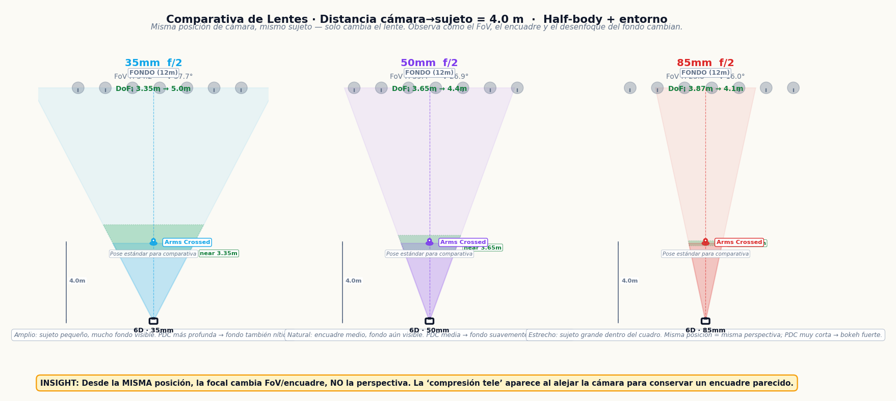
A 6 m, desde el MISMO punto, el 35mm da un plano amplio, el 50mm uno más cerrado y el 85mm un encuadre mucho más estrecho. La perspectiva geométrica no cambia hasta que mueves la cámara.
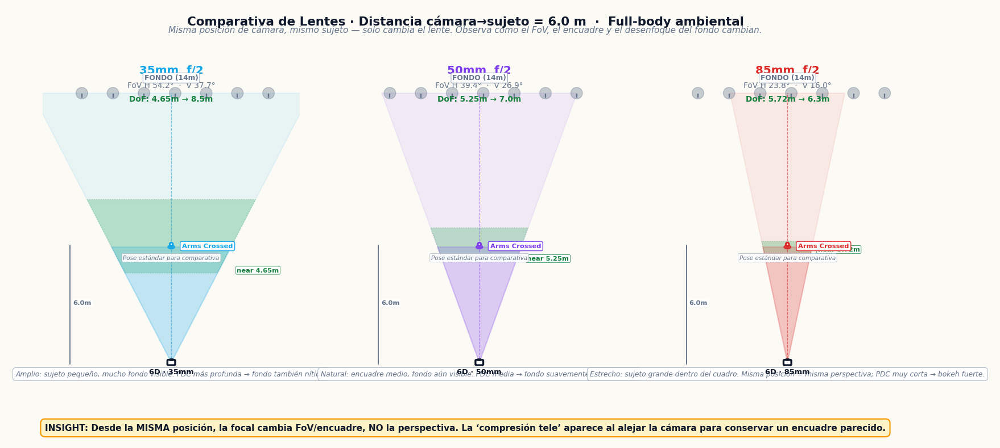
La primera versión tenía instrucciones de pose muy concretas. Las recuperamos sin convertir el planner en otra app: selecciona una familia y úsala como cue para la toma humana. El proyecto PoseArt sirve como referencia ampliada para explorar variaciones.
PoseArt documenta una biblioteca mucho más amplia; aquí usamos sólo familias que ayudan directamente a las 10 consignas fotográficas.
La lente, la distancia y el fondo determinan el resultado. Aprende el porqué de cada decisión.
La posición/distancia de cámara determina la perspectiva: cambia la relación aparente entre nariz, orejas, sujeto y fondo. La focal cambia FoV y magnificación. Si eliges 85mm y retrocedes para conservar el mismo encuadre, es ese retroceso el que produce la apariencia más “comprimida”.
El desenfoque del fondo depende de TRES factores: apertura (f/), distancia cámara-sujeto (más cerca = más desenfoque), y distancia sujeto-fondo (más lejos el fondo = más desenfoque). Para poca PDC: lente abierto (f/1.8), sujeto cerca (2-3m), fondo lejos (8m+).
Ejemplo: 85mm a f/1.8, sujeto a 2.5m, fondo a 12m → DoF de planificación ≈9cm. El ojo más cercano queda nítido, el otro ya borroso, y el fondo se convierte en mancha de color uniforme.
Cada lente tiene una distancia focal que determina su campo de visión (FoV) y magnificación. Un 35mm ve ≈54.2° horizontal; un 85mm ≈23.8°. Desde el mismo lugar la perspectiva no cambia; para mantener el MISMO encuadre con 85mm debes alejarte, y ese cambio de posición modifica la perspectiva.
El tiempo de exposición determina cómo se captura el movimiento. Usa la Field Card como punto de partida: 1/2000s congelado; 1/40s barrido (prueba 1/60→1/40→1/30); 1s fantasma; 10s lightpainting; 5–15s larga exposición; 2s zooming. Los planes pueden variar con la luz y explican por qué.
La altura y el ángulo de la cámara comunican emociones. Central (1.55m, 0°): neutral, igualdad. Picado (más alto, -20°): el sujeto se ve menor, vulnerable. Contrapicado (más bajo, +20°): agranda, heroico, dominante. Nadir: cámara debajo mirando 90° hacia ARRIBA. Cenital: cámara arriba mirando 90° hacia ABAJO. No son intercambiables.
La regla aplicada dirige el ojo del espectador. Tercios: equilibrio dinámico. Simetría: orden, calma. Perspectiva: profundidad. Enmarcado: foco al sujeto. Espacio negativo: aislamiento, respiración. Capas: profundidad real con FG/MID/BG.
La versión maestra conserva la interfaz iPhone, Field Card, diagramas 2D/2.5D, horarios, poses y comparador de lentes; recupera el laboratorio óptico, Home Lab, Abtao, QA visible y fuentes.
6 planes, Optical Lab interactivo, Home/Building Lab, Abtao/Distrito Financiero, metodología y fuentes.
iPhone standalone, 120 diagramas, Human/Perro, Día/Tarde/Noche, poses, Field Card, composición y guía.
Nadir↑ vs Cenital↓, óptica de perspectiva, aperturas reales, MFD/filtros, fantasma con persona y larga exposición urbana sin perro.
Prioridad a documentación Canon; cálculos ópticos con sensor 35.8×23.9mm y CoC 0.03mm como convención de planificación, no frontera física de nitidez.